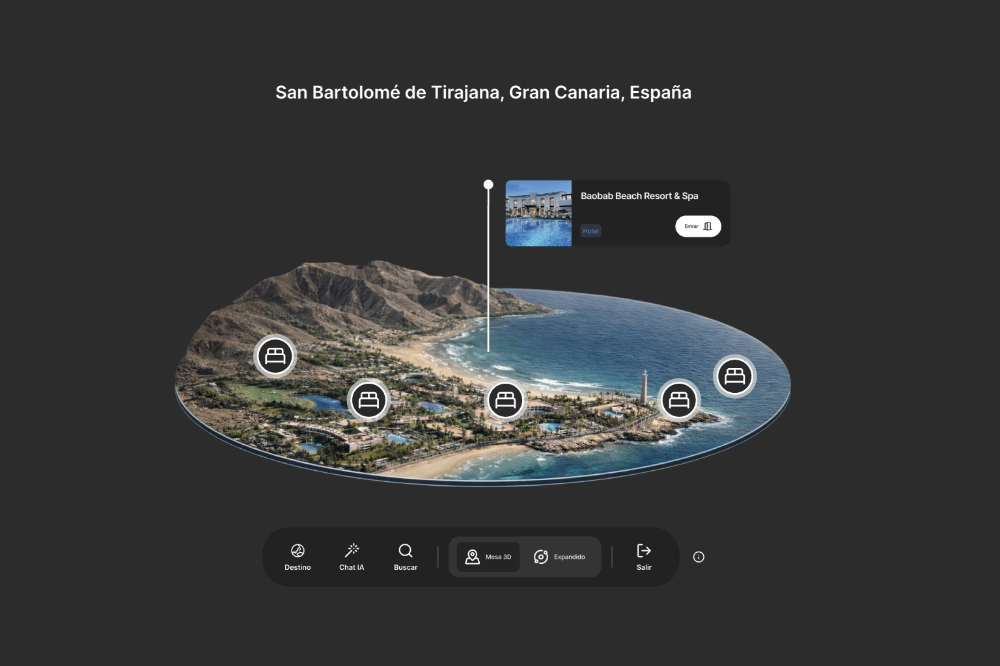
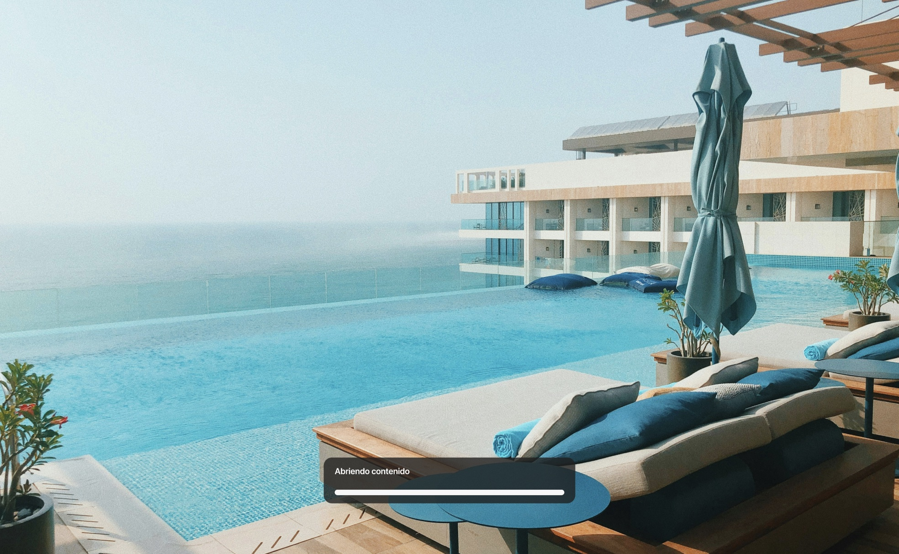
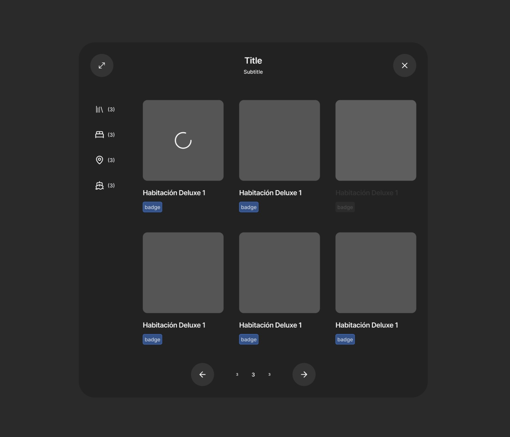

The barrier wasn't age: how we made a virtual reality travel experience easier to understand
Triportation is a virtual reality experience built to discover destinations and their tourism offering in an immersive way. Observing its use in real contexts, we found that difficulty didn't depend solely on age: many people couldn't find familiar reference points to help them understand how to get started, orient themselves, and move forward.
The research changed the product's approach: instead of adding more instructions, we reorganized the experience around a clear entry point, simple interactions, and familiar patterns.
01 Context
Triportation let people explore destinations, hotels, points of interest, restaurants, and cruises from a virtual reality environment. Its purpose wasn't to manage bookings, but to help travel agencies present their offering in a more visual, immersive, and inspiring way.
The initial interface brought together features with different levels of relevance without a clear hierarchy. On entering the experience, some people didn't know where to start, what actions they could take, or how to move around the environment.
The team's initial interpretation linked these difficulties to users' age. Before designing a solution specifically for older users, we needed to check what was actually causing the disorientation.
02 Decision the team had to make
We had to choose between two directions:
- Explain more: add a longer tutorial aimed at older users.
- Structure better: research the real barriers and reorganize the experience around more recognizable interactions.
The decision mattered because it shaped both the onboarding and the product's information architecture.
03 Research question
What stops some people from understanding and exploring Triportation independently during their first minutes in virtual reality?
As a secondary question, we examined whether age explained these difficulties, or whether more relevant factors were at play, such as technological familiarity, prior VR experience, and recognition of interaction patterns.
04 Initial hypotheses
- Age was the main barrier to using the experience.
- A longer tutorial would reduce most of the difficulties.
- VR's physical discomfort was the main cause of drop-off.
- Showing all features from the start would help users understand the product's scope.
05 Methodology and participants
We ran the research in two different contexts: a trade fair in Seville, where people tried the experience in an open environment, and a session at the Universidad de Las Palmas de Gran Canaria, in a more controlled testing context.
We combined contextual observation, exploratory conversations, and moderated usability tests. During the first interactions, we observed:
- How they tried to start the experience.
- At what points they needed help.
- How they interpreted controls and visual elements.
- Which decisions caused hesitation.
- How they oriented themselves within the virtual space.
To analyze behavior, we considered technological familiarity and prior experience with video games or virtual reality, rather than relying solely on age as a segmentation criterion.
06 Evidence observed
Virtual reality was a new medium even for people used to apps and websites. On entering the environment, many participants lacked a clear mental model of how to interact with it.
The initial interface increased this difficulty because it presented several features simultaneously, without signaling what the first step should be.
Users looked for familiar reference points that would let them understand where they were, what they could do, and what would happen after each action.
Difficulties also appeared among younger participants with little experience in video games or VR. This indicated that age alone did not explain the observed behavior.
07 Patterns and insights
1. Familiarity mattered more than age
Difficulties were mainly related to prior experience and the ability to recognize interaction conventions, not to a lower learning capacity associated with age.
2. VR needed familiar anchor points
Within a new environment, people looked for elements they could relate to other media: a movie-style cover screen, navigation similar to an app, or a recognizable visual structure.
3. Explaining more didn't fix a confusing structure
The problem wasn't only a lack of instructions. The experience showed too many possibilities before the user understood what the main path was.
4. Fewer actions increased the sense of control
Reducing visible decisions and establishing a clear sequence could lower cognitive load and help people explore the product with greater autonomy.
08 Product implications
The research ruled out designing an experience specifically for "older users." That solution would have started from a demographic variable that didn't, on its own, explain the difficulties observed.
The opportunity was in translating virtual reality into a more familiar interaction language: establishing a recognizable entry point, reducing the actions required, and presenting information progressively.
We also needed to prioritize the features that supported the value proposition for our clients, mainly travel agencies: making it easier to discover destinations and visually present their tourism offering.
09 Decisions made
Destination as the entry point
We turned destination selection into the main action. From there, users could discover the different available places and access their associated content.
3D table as a spatial reference
We organized navigation around a three-dimensional table that acted as an anchor point within the virtual environment. This let users recognize where they were and move between destinations through simple interactions.

Familiar visual patterns
We incorporated references from film, apps, and the web to reduce the distance between a new technology and interaction models people already knew.

Content organized progressively
Hotels, points of interest, restaurants, and cruises appeared after selecting a destination, avoiding showing the entire offering from the start.

Filters as a secondary function
Filters helped narrow down exploration, but didn't visually compete with the main action.
The new journey was reduced to an understandable sequence: choose a destination → explore it on the 3D table → discover its tourism offering.
10 Outcome, limitations, and next steps
The research changed the focus of the redesign: instead of trying to explain a complex interface with more instructions, we started building a more hierarchical, familiar experience oriented toward discovery.
The main impact was replacing age-based segmentation with decisions grounded in technological familiarity and observed behavior.
Limitations: the research was carried out with a small exploratory sample and in two specific contexts. Because of that, the results could guide the design but not be generalized to the whole population, nor yet demonstrate a quantitative improvement.
Next steps: the next phase should evaluate the new journey with a larger sample and measure:
- Completion of the first unassisted exploration.
- Time to select the first destination.
- Number of assistance requests.
- Errors or unintended actions.
- Drop-off during the first few minutes.
Key takeaway: the research didn't show that people needed more instructions. It showed that a new technology needs to rely on familiar reference points to be understood.
Does your product assume usability difficulty depends on who's using it demographically?
Let's talk about segmenting by behavior instead of age before designing a solution.
Let's talk